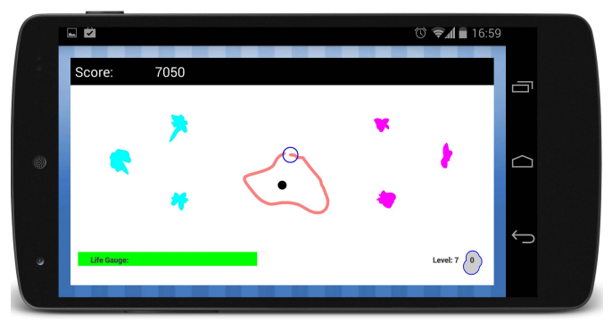

ENG0018 Computer Laboratory 2023/24
Student URN: 6845272
Conference paper: Analyzing the Implementation and Impact of Gamification within Computer Science
Abstract
Many studies have shown that the majority of the student populus are dissatisfied with education, almost 80% of students at 14 being dissatisfied with school (reference). Since this is the case, why do most students get excited when the teacher lets them play Kahoot?
Gamification is defined as “the strategic attempt to enhance systems, services, organizations, and activities by creating similar experiences to those experienced when playing games.” (Wikipedia, 2023), and the student’s excitement to engage with an education app such as Kahoot demonstrates the impact of transforming an otherwise tedious task of learning into a fun and interactive experience.
This tactic is employed within many areas, and very easily with the use of the internet. This article aims to analyze the impact and implementation of gamification within various fields related to computing.
Analysis and discussion
There are many cases where machine learning algorithms are developed, yet require a lot of data in order to improve in functionality. One specific example where using gamification encourages users to interact and provide this data is the game “BlobSnake” [3]. This is a game that has been designed to gamify Human Intelligence Tasks by having the user look at six shapes, two groups of three that are similar to each other, and drawing a shape that fits one group better than the other.

Figure 1
The impact of gamifying this task is that users now feel compelled to interact with the program and to provide lots of data, which can then be repurposed to train a Human Activity Recognition (HAR) system. This is a system which involves transforming sequential data, primarily from inertial sensors (e.g accelerometers and gyroscopes), into an indication of which specific type of activity a person is undertaking at a given period in time [5]. In other words, these systems can determine what actions a person is doing from simpler data. In order to improve these systems, lots of data is required in order to establish patterns and increase in complexity, and BlobSnake achieves this due to its competitive nature and easy to understand rules encouraging people to play. Overall, this implementation of gamification has the impact of a higher incentive for humans to provide data that can be used to improve HAR systems.
An example where gamification is used is within education in order to encourage people to learn and develop their coding skills, done by the website Codecademy. This is a service that offers coding challenges for people at any skill level for any language.
As learning a new language is tedious and often requires inspiration that is difficult to have, Codecademy creates a game from their coding tasks that are supplied by using a point system that rewards you based on the difficulty of the task completed. Not only does this help people to improve on their programming skills, but also allows them to track their progress and compare with others that also partake.
This adds a competitive element to the experience, which not only gives users the drive to do better than others, but promotes continuous improvement in coding ability.
The impact of the gamification of learning coding showed around after 2014, where around 39% of American employers complained of a skills gap (2014 skillgap). However, during 2015 coding bootcamps as a whole became much more popular (geekwire article), not only closing this gap but creating a huge growth in the amount of people interested in taking up coding. Gamifying the experience of learning a programming language made it much easier not only to work on your existing skills, but to start an interest in the first place.
 Figure 2
Figure 2
This graph (The Eighteenth Elephant, 2023) shows the upward trend of computer science majors, the red line from UC Berkeley and the other lines from various other American colleges.
References
[3] [4] [5] https://dl-acm-org.surrey.idm.oclc.org/doi/abs/10.1145/2783446.2783579 - BlobSnake (Human Activity Recognition)
https://dl.acm.org/doi/abs/10.1145/3383456 - The Impact of Gamification on Learning Outcomes of Computer Science Majors
https://eric.ed.gov/?id=EJ1101229 - An Empirical Study of Applying Gamification Techniques to a Computer Programming Class
[1] Thomson, F. (2022). Student wellbeing at secondary school: 79% of 14 year olds extremely dissatisfied. [online] Open Access Government. Available at: https://www.openaccessgovernment.org/student-wellbeing-secondary-school-extremely-dissatisfied/148091/
[2] https://en.wikipedia.org/wiki/Gamification - definition of gamification
Kirkham, R., Shepherd, C. and Plötz, T. (2015). BlobSnake. doi:https://doi.org/10.1145/2783446.2783579
https://hbr.org/2014/08/employers-arent-just-whining-the-skills-gap-is-real - 2014 skillgap
https://www.geekwire.com/2015/coding-bootcamps-see-huge-enrollment-increase-in-2015-ruby-most-popular-language/ - 2015 huge enrollment increase
The Eighteenth Elephant. (2023). 10 Double the number of Computer Science majors / 20 GOTO 10. [online] Available at: https://eighteenthelephant.com/2023/02/12/10-double-the-number-of-computer-science-majors-20-goto-10/ [Accessed 30 Nov. 2023]